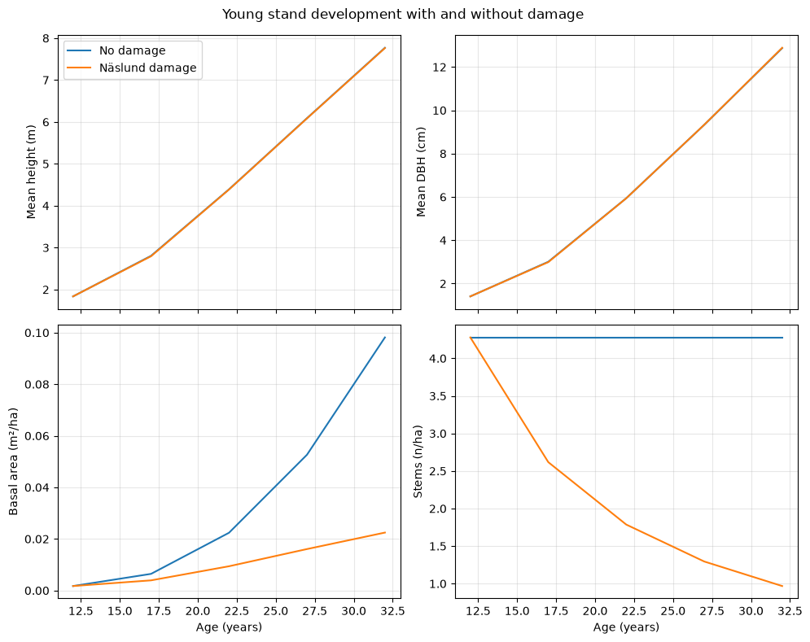

Young stand demo (NYSKOG + Näslund 1986)#
Notebook Objectives#
Build a young stand workflow from initialization through growth with reproducible inputs.
Provide runnable, copy-safe snippets that work in the docs build environment.
Prerequisites#
Python environment with
pyforestryinstalled from this repository.Execute cells in order; random components should use fixed seeds where shown.
Sources#
NYSKOG reconstruction and Swedish growth utilities in
pyforestry.sweden.adapters.Näslund (1986) height/diameter relationships where used in the workflow.
This notebook shows a small, reproducible workflow for constructing a Swedish site, reconstructing a young stand using the NYSKOG equations (Appendix 2), and running a short forward simulation with the young-stand equations and Näslund damage model.
Note: The original HUGIN/NYSKOG database is not part of pyforestry, so this demo synthesizes an initial tree list from the reconstruction equations only.
[1]:
import copy
import math
import random
import matplotlib.pyplot as plt
import numpy as np
from pyforestry.base.helpers.primitives.sitebase import SiteBase
from pyforestry.base.helpers.tree import Tree
from pyforestry.base.helpers.tree_species import TreeSpecies
from pyforestry.sweden.adapters.elfving_1982 import (
HuginMeanHeightModel,
NfiRegion,
NyskogReconstruction,
RegenerationType,
nyskog_indicators_from_site,
)
from pyforestry.sweden.mortality.naslund_1986 import (
Naslund1986DamageModel,
SaplingSpeciesGroup,
)
from pyforestry.sweden.systems.nystrom_soderberg_1987 import NystromSoderberg1987
from pyforestry.sweden.site import Sweden, SwedishSite
from pyforestry.sweden.siteindex.sis.generated_site_category_trees import (
predict_site_categories_county_tree,
)
from pyforestry.sweden.siteindex.sis.hagglund_lundmark_1977 import Hagglund_Lundmark_1977_SIS
class SwedishSiteDemo(SwedishSite):
"""Concrete wrapper for notebooks (implements SiteBase abstract method)."""
def compute_attributes(self) -> None:
SwedishSite.__post_init__(self)
def __post_init__(self) -> None:
SiteBase.__post_init__(self)
random.seed(42)
np.random.seed(42)
1. Define a Swedish site#
[2]:
site_index_pine_m = 20.0
site_index_spruce_m = 22.0
county = Sweden.County.KOPPARBERG_OVRIGA
site_category_species = "Pinus sylvestris"
requested_sis = site_index_pine_m
predicted_site_categories = predict_site_categories_county_tree(
sis_hagglund_1979=requested_sis,
species=site_category_species,
Direktlan=county,
)
site = SwedishSiteDemo(
latitude=60.5,
longitude=15.0,
altitude=150.0,
field_layer=predicted_site_categories["field_layer"],
bottom_layer=predicted_site_categories["bottom_layer"],
soil_texture=predicted_site_categories["soil_texture"],
soil_moisture=predicted_site_categories["soil_moisture"],
soil_depth=predicted_site_categories["soil_depth"],
soil_water=predicted_site_categories["soil_water"],
ditched=predicted_site_categories["ditched"],
)
achieved_sis = Hagglund_Lundmark_1977_SIS(
species=site_category_species,
latitude=site.latitude,
altitude=site.altitude or 0.0,
soil_moisture=site.soil_moisture,
ground_layer=site.bottom_layer or Sweden.BottomLayer.FRESH_MOSS,
vegetation=site.field_layer,
soil_texture=site.soil_texture or Sweden.SoilTextureTill.SANDY,
climate_code=site.climate_zone or Sweden.ClimateZone.K1,
lateral_water=site.soil_water or Sweden.SoilWater.SELDOM_NEVER,
soil_depth=site.soil_depth or Sweden.SoilDepth.DEEP,
incline_percent=site.incline_percent or 0.0,
aspect=site.aspect or 0.0,
nfi_adjustments=True,
dlan=site.county or county,
ditched=bool(site.ditched),
peat=False,
gotland=False,
coast=(site.distance_to_coast or 9999.0) < 50.0,
limes_norrlandicus=bool(site.n_of_limes_norrlandicus),
)
sis_closeness = {
"requested_sis": requested_sis,
"achieved_sis": float(achieved_sis),
"sis_abs_error": abs(float(achieved_sis) - requested_sis),
"sis_rel_error_pct": 100.0 * abs(float(achieved_sis) - requested_sis) / requested_sis,
}
display({"sis_closeness": sis_closeness, "predicted_site_categories": predicted_site_categories})
site
{'sis_closeness': {'requested_sis': 20.0,
'achieved_sis': 20.698654683125625,
'sis_abs_error': 0.6986546831256248,
'sis_rel_error_pct': 3.493273415628124},
'predicted_site_categories': {'field_layer': <SwedenFieldLayer.LICHEN_FREQUENT: Vegetation(code=17, swedish_name='Lavrik', english_name='Lichen, frequent occurrence', index=-0.5)>,
'bottom_layer': <SwedenBottomLayer.BOGMOSS_TYPE: BottomLayerType(code=4, english_name='Bogmoss type (Sphagnum)', swedish_name='Vitmosstyp')>,
'soil_texture': <SwedenSoilTextureTill.SANDY_MOIG: SoilTextureCategory(code=4, swedish_name='Sandig-moig morän', english_name='Sandy-silty till', short_name='Medium sand')>,
'soil_moisture': <SwedenSoilMoisture.MESIC: SoilMoistureData(code=2, swedish_description='frisk', english_description='Mesic (subsoil water depth = 1-2 m)')>,
'soil_depth': <SwedenSoilDepth.DEEP: SoilDepthCat(code=1, swedish_description='Mäktigt >70 cm. Inga synliga hällar', english_description='Deep >70cm. No visible stone outcrops.')>,
'soil_water': <SwedenSoilWater.SHORTER_PERIODS: SoilWaterCat(code=2, swedish_description='kortare perioder', english_description='Shorter periods')>,
'ditched': False}}
[2]:
SwedishSiteDemo(latitude=60.5, longitude=15.0, altitude=150.0, field_layer=<SwedenFieldLayer.LICHEN_FREQUENT: Vegetation(code=17, swedish_name='Lavrik', english_name='Lichen, frequent occurrence', index=-0.5)>, bottom_layer=<SwedenBottomLayer.BOGMOSS_TYPE: BottomLayerType(code=4, english_name='Bogmoss type (Sphagnum)', swedish_name='Vitmosstyp')>, soil_texture=<SwedenSoilTextureTill.SANDY_MOIG: SoilTextureCategory(code=4, swedish_name='Sandig-moig morän', english_name='Sandy-silty till', short_name='Medium sand')>, soil_moisture=<SwedenSoilMoisture.MESIC: SoilMoistureData(code=2, swedish_description='frisk', english_description='Mesic (subsoil water depth = 1-2 m)')>, soil_depth=<SwedenSoilDepth.DEEP: SoilDepthCat(code=1, swedish_description='Mäktigt >70 cm. Inga synliga hällar', english_description='Deep >70cm. No visible stone outcrops.')>, soil_water=<SwedenSoilWater.SHORTER_PERIODS: SoilWaterCat(code=2, swedish_description='kortare perioder', english_description='Shorter periods')>, aspect=None, incline_percent=None, ditched=False, temperature_sum_odin1983=1215.1999999999998, county=<SwedenCounty.KOPPARBERG_OVRIGA: CountyData(code=12, label='Kopparberg (Dalarna), övriga (W övr)')>, humidity=np.float64(75.0), distance_to_coast=np.float64(254.68051713105228), climate_zone=<SwedenClimateZone.M3: ClimateZoneData(code=3, label='M3', description='Maritime, Mountain range')>, sis_spruce_100=None, sis_pine_100=None, sis_birch_50=SiteIndexValue(19.889499999999984, reference_age=AgeMeasurement(50.0, code=2 [DBH]), species={TreeName(genus=TreeGenus(name='Betula', code='BETULA'), species_name='pendula', code='BPEN'), TreeName(genus=TreeGenus(name='Betula', code='BETULA'), species_name='pubescens', code='BPUB')}, fn=eriksson_1997_height_trajectory_sweden_birch), n_of_limes_norrlandicus=True)
2. Reconstruct a young stand using NYSKOG equations#
[3]:
regen_type = RegenerationType.NATURAL
species_to_plant = TreeSpecies.Sweden.pinus_sylvestris
nfi_region = NfiRegion.REG3
age_years = 12.0
mean_height_main_m = HuginMeanHeightModel.mean_height(
age_years=age_years,
species=species_to_plant,
site_index_pine_m=site_index_pine_m,
site_index_spruce_m=site_index_spruce_m,
)
indicators = nyskog_indicators_from_site(
field_layer=site.field_layer,
soil_moisture=site.soil_moisture,
)
# NOTE: ASINW is typically derived from the published Elfving regeneration functions (Appendix 2).
asinw = 110.0
q = NyskogReconstruction.production_potential_q(asinw)
ln_q = math.log(q)
ln_si = math.log(site_index_pine_m)
under_dimension_prob = NyskogReconstruction.udim_probability(q)
height_indicator_dm = max(15.0, 10.0 * mean_height_main_m)
stem_total = NyskogReconstruction.total_stems(
regeneration_type=regen_type,
mean_height_main_m=mean_height_main_m,
q=q,
ln_q=ln_q,
ln_si=ln_si,
under_dimension_prob=under_dimension_prob,
wet=indicators["wet"],
dry=indicators["dry"],
height_indicator_dm=height_indicator_dm,
deterministic=True,
)
prop_conifer = NyskogReconstruction.proportion_conifer(
regeneration_type=regen_type,
q=q,
ln_qind=ln_q,
stem_total=stem_total,
ln_si=ln_si,
wet=indicators["wet"],
dry=indicators["dry"],
rich=indicators["rich"],
poor=indicators["poor"],
deterministic=True,
)
prop_dom_conifer = NyskogReconstruction.dominant_conifer_share(
regeneration_type=regen_type,
qind=q,
ln_si=ln_si,
wet=indicators["wet"],
dry=indicators["dry"],
rich=indicators["rich"],
poor=indicators["poor"],
hwod=indicators["hwod"],
hwd=indicators["hwd"],
shrubs=indicators["shrubs"],
lichen=indicators["lichen"],
deterministic=True,
)
stems = NyskogReconstruction.stems_per_species(
regeneration_type=regen_type,
species_to_plant=species_to_plant,
stem_total=stem_total,
prop_conifer=prop_conifer,
prop_dom_conifer=prop_dom_conifer,
site_index_m=site_index_pine_m,
nfi_region=nfi_region,
)
stems
[3]:
{'pine': 1.1237727333829194e-08,
'spruce': 2.7121535622305318e-05,
'contorta': 0.0,
'larch': 0.0,
'birch': 4.107623694305894,
'other_broadleaf': 0.1711509872627456}
3. Sample a tree list from reconstructed stand metrics#
[4]:
def mean_height_secondary(species: TreeSpecies) -> float:
site_index_m = site_index_spruce_m if species in {
TreeSpecies.Sweden.picea_abies,
TreeSpecies.Sweden.picea_sitchensis,
TreeSpecies.Sweden.picea_mariana,
} else site_index_pine_m
return NyskogReconstruction.secondary_mean_height(
regeneration_type=regen_type,
secondary_species=species,
site_index_m=site_index_m,
mean_height_main_m=mean_height_main_m,
herb=indicators["herb"],
dry=indicators["dry"],
wet=indicators["wet"],
deterministic=True,
)
species_map = {
"pine": TreeSpecies.Sweden.pinus_sylvestris,
"spruce": TreeSpecies.Sweden.picea_abies,
"contorta": TreeSpecies.Sweden.pinus_contorta,
"larch": TreeSpecies.Sweden.larix_sibirica,
"birch": TreeSpecies.Sweden.betula_pendula,
"other_broadleaf": TreeSpecies.Sweden.populus_tremula,
}
mean_heights = {
"pine": mean_height_main_m,
"spruce": mean_height_secondary(TreeSpecies.Sweden.picea_abies),
"contorta": mean_height_secondary(TreeSpecies.Sweden.pinus_contorta),
"larch": mean_height_secondary(TreeSpecies.Sweden.larix_sibirica),
"birch": mean_height_secondary(TreeSpecies.Sweden.betula_pendula),
"other_broadleaf": mean_height_secondary(TreeSpecies.Sweden.populus_tremula),
}
sample_n = 200
total_stems = sum(stems.values())
trees: list[Tree] = []
for label, stems_per_ha in stems.items():
if stems_per_ha <= 0.0:
continue
share = stems_per_ha / total_stems
n_trees = max(1, int(round(sample_n * share)))
species = species_map[label]
mean_height = mean_heights[label]
cvh = NyskogReconstruction.height_variation(
species=species,
species_height_m=mean_height,
q=q,
ln_q=ln_q,
self_rejuvenated=1,
deterministic=True,
)
beta, shape = NyskogReconstruction.weibull_parameters(
species=species,
cvh=cvh,
mean_height_m=mean_height,
)
heights = beta * np.random.weibull(shape, size=n_trees)
weight = stems_per_ha / n_trees
for height in heights:
trees.append(
Tree(
species=species,
height_m=float(height),
weight_n=weight,
)
)
base_trees = copy.deepcopy(trees)
len(trees)
[4]:
202
4. DBH and Näslund damage proportions#
[5]:
def stand_metrics(tree_list: list[Tree]) -> dict[str, float]:
heights = np.array([t.height_m or 0.0 for t in tree_list])
weights = np.array([t.weight_n or 0.0 for t in tree_list])
total_weight = weights.sum()
if total_weight <= 0.0:
return {
"mean_height_m": 0.0,
"total_height_sqr_m2_per_100m2": 0.0,
"broadleaf_height_sqr_share": 0.0,
"h_max_m": 0.0,
}
mean_height = float((heights * weights).sum() / total_weight)
height_sqr_sum = float(((heights**2) * weights).sum())
total_height_sqr_m2_per_100m2 = height_sqr_sum * 0.01
broadleaf_species = {
TreeSpecies.Sweden.betula_pendula,
TreeSpecies.Sweden.betula_pubescens,
TreeSpecies.Sweden.populus_tremula,
}
broadleaf_mask = np.array([t.species in broadleaf_species for t in tree_list])
broadleaf_sqr_sum = float(((heights**2) * weights * broadleaf_mask).sum())
if height_sqr_sum > 0.0:
broadleaf_share = broadleaf_sqr_sum / height_sqr_sum
else:
broadleaf_share = 0.0
top_heights = sorted(heights, reverse=True)[:3]
h_max_m = float(np.mean(top_heights)) if top_heights else 0.0
return {
"mean_height_m": mean_height,
"total_height_sqr_m2_per_100m2": total_height_sqr_m2_per_100m2,
"broadleaf_height_sqr_share": broadleaf_share,
"h_max_m": h_max_m,
}
def sapling_group(species: TreeSpecies) -> SaplingSpeciesGroup:
if species in {
TreeSpecies.Sweden.pinus_sylvestris,
TreeSpecies.Sweden.larix_sibirica,
TreeSpecies.Sweden.larix_decidua,
TreeSpecies.Sweden.larix_europaea_x_leptolepis,
TreeSpecies.Sweden.larix_sukaczewii,
}:
return SaplingSpeciesGroup.PINE
if species == TreeSpecies.Sweden.pinus_contorta:
return SaplingSpeciesGroup.CONTORTA
if species == TreeSpecies.Sweden.picea_abies:
return SaplingSpeciesGroup.SPRUCE
if species in {
TreeSpecies.Sweden.betula_pendula,
TreeSpecies.Sweden.betula_pubescens,
}:
return SaplingSpeciesGroup.BIRCH
if species in {
TreeSpecies.Sweden.populus_tremula,
TreeSpecies.Sweden.populus_tremula_x_tremuloides,
}:
return SaplingSpeciesGroup.ASPEN
return SaplingSpeciesGroup.OTHER_BROADLEAF
def apply_dbh(tree_list: list[Tree]) -> None:
metrics = stand_metrics(tree_list)
if metrics["mean_height_m"] <= 0.0:
return
for tree in tree_list:
if tree.height_m is None or tree.species is None:
continue
tree.diameter_cm = NystromSoderberg1987.dbh_from_height(
height_dm=tree.height_m * 10.0,
species=tree.species,
total_height_sqr_m2_per_100m2=metrics["total_height_sqr_m2_per_100m2"],
broadleaf_height_sqr_share=metrics["broadleaf_height_sqr_share"],
natural_regeneration=1,
cleaning_indicator=0,
years_since_cleaning=0,
altitude_m=site.altitude or 0.0,
latitude_deg=site.latitude,
shrubs=indicators["shrubs"],
herb_grass=indicators["herb"],
near_coast=1 if (site.distance_to_coast or 99.0) < 5.0 else 0,
site_index_pine_m=site_index_pine_m,
h_max_m=metrics["h_max_m"],
veg=0,
)
def damage_proportions(tree_list: list[Tree]) -> dict[SaplingSpeciesGroup, float]:
stems = {sg: 0.0 for sg in SaplingSpeciesGroup}
height_sums = {sg: 0.0 for sg in SaplingSpeciesGroup}
for tree in tree_list:
if tree.species is None or tree.height_m is None:
continue
group = sapling_group(tree.species)
stems[group] += tree.weight_n or 0.0
height_sums[group] += (tree.weight_n or 0.0) * tree.height_m
mean_heights = {
sg: (height_sums[sg] / stems[sg] if stems[sg] > 0.0 else 0.0)
for sg in SaplingSpeciesGroup
}
return Naslund1986DamageModel.damage_proportions(
stems=stems,
mean_heights=mean_heights,
site_index_pine_m=site_index_pine_m,
site_index_spruce_m=site_index_spruce_m,
latitude_deg=site.latitude,
altitude_m=site.altitude or 0.0,
)
def apply_damage_mortality(
tree_list: list[Tree],
damage_props: dict[SaplingSpeciesGroup, float],
) -> None:
for tree in tree_list:
if tree.species is None:
continue
group = sapling_group(tree.species)
damage_prop = damage_props.get(group, 0.0)
damage_prop = min(1.0, max(0.0, damage_prop))
if tree.weight_n is not None:
tree.weight_n *= 1.0 - damage_prop
apply_dbh(trees)
damage_proportions(trees)
[5]:
{<SaplingSpeciesGroup.PINE: 'pine'>: 0.9210190958848993,
<SaplingSpeciesGroup.SPRUCE: 'spruce'>: 0.31884692539203713,
<SaplingSpeciesGroup.CONTORTA: 'contorta'>: 0.46655281692975714,
<SaplingSpeciesGroup.BIRCH: 'birch'>: 0.43137552006404767,
<SaplingSpeciesGroup.ASPEN: 'aspen'>: 0.808861286495369}
5. Simple forward simulation#
[6]:
def stand_summary(tree_list: list[Tree], age_years: float) -> dict[str, float]:
heights = np.array([t.height_m or 0.0 for t in tree_list])
diameters = np.array([t.diameter_cm or 0.0 for t in tree_list])
weights = np.array([t.weight_n or 0.0 for t in tree_list])
total_weight = weights.sum()
if total_weight <= 0.0:
return {
"age_years": age_years,
"mean_height_m": 0.0,
"mean_dbh_cm": 0.0,
"basal_area_m2_ha": 0.0,
"stems_per_ha": 0.0,
"pine_damage_prop": 0.0,
"spruce_damage_prop": 0.0,
"birch_damage_prop": 0.0,
}
mean_height = float((heights * weights).sum() / total_weight)
mean_dbh = float((diameters * weights).sum() / total_weight)
basal_area = float((math.pi * (diameters / 200.0) ** 2 * weights).sum())
damages = damage_proportions(tree_list)
return {
"age_years": age_years,
"mean_height_m": mean_height,
"mean_dbh_cm": mean_dbh,
"basal_area_m2_ha": basal_area,
"stems_per_ha": float(total_weight),
"pine_damage_prop": damages.get(SaplingSpeciesGroup.PINE, 0.0),
"spruce_damage_prop": damages.get(SaplingSpeciesGroup.SPRUCE, 0.0),
"birch_damage_prop": damages.get(SaplingSpeciesGroup.BIRCH, 0.0),
}
def advance_years(tree_list: list[Tree], age_years: float, dt: float) -> float:
current_mean_height = stand_metrics(tree_list)["mean_height_m"]
new_mean_height = HuginMeanHeightModel.mean_height(
age_years=age_years + dt,
species=species_to_plant,
site_index_pine_m=site_index_pine_m,
site_index_spruce_m=site_index_spruce_m,
)
if current_mean_height > 0.0:
scale = new_mean_height / current_mean_height
else:
scale = 1.0
for tree in tree_list:
if tree.height_m is not None:
tree.height_m *= scale
apply_dbh(tree_list)
return age_years + dt
def run_simulation(
base_tree_list: list[Tree],
age_start: float,
steps: int,
dt: float,
*,
apply_damage: bool,
) -> list[dict[str, float]]:
trees = copy.deepcopy(base_tree_list)
apply_dbh(trees)
age = age_start
results: list[dict[str, float]] = []
for step in range(steps + 1):
results.append(stand_summary(trees, age))
if step == steps:
break
age = advance_years(trees, age, dt=dt)
if apply_damage:
damage_props = damage_proportions(trees)
apply_damage_mortality(trees, damage_props)
return results
baseline_results = run_simulation(
base_tree_list=base_trees,
age_start=age_years,
steps=4,
dt=5.0,
apply_damage=False,
)
damage_results = run_simulation(
base_tree_list=base_trees,
age_start=age_years,
steps=4,
dt=5.0,
apply_damage=True,
)
baseline_results, damage_results
[6]:
([{'age_years': 12.0,
'mean_height_m': 1.8364061179675712,
'mean_dbh_cm': 1.4059244876810695,
'basal_area_m2_ha': 0.0017315843953872472,
'stems_per_ha': 4.278801814341991,
'pine_damage_prop': 0.9210190958848993,
'spruce_damage_prop': 0.31884692539203713,
'birch_damage_prop': 0.43137552006404767},
{'age_years': 17.0,
'mean_height_m': 2.8046456524991306,
'mean_dbh_cm': 3.0058718639026423,
'basal_area_m2_ha': 0.006449129392088587,
'stems_per_ha': 4.278801814341991,
'pine_damage_prop': 0.9104292839247184,
'spruce_damage_prop': 0.30714470724665544,
'birch_damage_prop': 0.37637860318126193},
{'age_years': 22.0,
'mean_height_m': 4.391840787559592,
'mean_dbh_cm': 5.941663432640536,
'basal_area_m2_ha': 0.022388438474248065,
'stems_per_ha': 4.278801814341991,
'pine_damage_prop': 0.8989349753683552,
'spruce_damage_prop': 0.29444988882232626,
'birch_damage_prop': 0.31160273388395754},
{'age_years': 27.0,
'mean_height_m': 6.089057804888556,
'mean_dbh_cm': 9.32971765389452,
'basal_area_m2_ha': 0.052639859945510084,
'stems_per_ha': 4.278801814341991,
'pine_damage_prop': 0.8946968119448138,
'spruce_damage_prop': 0.28795619329430894,
'birch_damage_prop': 0.2694803023832017},
{'age_years': 32.0,
'mean_height_m': 7.769377984143345,
'mean_dbh_cm': 12.872299228257004,
'basal_area_m2_ha': 0.09814136162343756,
'stems_per_ha': 4.278801814341991,
'pine_damage_prop': 0.8986930690241375,
'spruce_damage_prop': 0.28695618921128485,
'birch_damage_prop': 0.24582356728290555}],
[{'age_years': 12.0,
'mean_height_m': 1.8364061179675712,
'mean_dbh_cm': 1.4059244876810695,
'basal_area_m2_ha': 0.0017315843953872472,
'stems_per_ha': 4.278801814341991,
'pine_damage_prop': 0.9210190958848993,
'spruce_damage_prop': 0.31884692539203713,
'birch_damage_prop': 0.43137552006404767},
{'age_years': 17.0,
'mean_height_m': 2.794371827653286,
'mean_dbh_cm': 2.989501974867348,
'basal_area_m2_ha': 0.00393252078890505,
'stems_per_ha': 2.6175400944998386,
'pine_damage_prop': 0.9101807985656681,
'spruce_damage_prop': 0.30709141020895203,
'birch_damage_prop': 0.3787099399155147},
{'age_years': 22.0,
'mean_height_m': 4.386750782117223,
'mean_dbh_cm': 5.937312186510979,
'basal_area_m2_ha': 0.009402251694343862,
'stems_per_ha': 1.7864354446989266,
'pine_damage_prop': 0.8982652872394667,
'spruce_damage_prop': 0.29423543917040135,
'birch_damage_prop': 0.3141829661931719},
{'age_years': 27.0,
'mean_height_m': 6.08386287152657,
'mean_dbh_cm': 9.33253578761509,
'basal_area_m2_ha': 0.016069656299500714,
'stems_per_ha': 1.294786035679883,
'pine_damage_prop': 0.8936191940194611,
'spruce_damage_prop': 0.2876810932973698,
'birch_damage_prop': 0.2725883347057196},
{'age_years': 32.0,
'mean_height_m': 7.762586093979281,
'mean_dbh_cm': 12.887353513337917,
'basal_area_m2_ha': 0.022462427570421852,
'stems_per_ha': 0.9680302226789413,
'pine_damage_prop': 0.8971685273164314,
'spruce_damage_prop': 0.2866473361673356,
'birch_damage_prop': 0.2495750130515236}])
6. Damage vs no-damage comparison#
[7]:
def plot_comparison(
baseline: list[dict[str, float]],
damaged: list[dict[str, float]],
) -> None:
ages = [row["age_years"] for row in baseline]
fig, axes = plt.subplots(2, 2, figsize=(10, 8), sharex=True)
axes = axes.flatten()
metrics = [
("mean_height_m", "Mean height (m)"),
("mean_dbh_cm", "Mean DBH (cm)"),
("basal_area_m2_ha", "Basal area (m²/ha)"),
("stems_per_ha", "Stems (n/ha)"),
]
for ax, (key, label) in zip(axes, metrics):
ax.plot(ages, [row[key] for row in baseline], label="No damage")
ax.plot(ages, [row[key] for row in damaged], label="Näslund damage")
ax.set_ylabel(label)
ax.grid(True, alpha=0.3)
axes[-2].set_xlabel("Age (years)")
axes[-1].set_xlabel("Age (years)")
axes[0].legend(loc="best")
fig.suptitle("Young stand development with and without damage", fontsize=12)
fig.tight_layout()
plot_comparison(baseline_results, damage_results)
